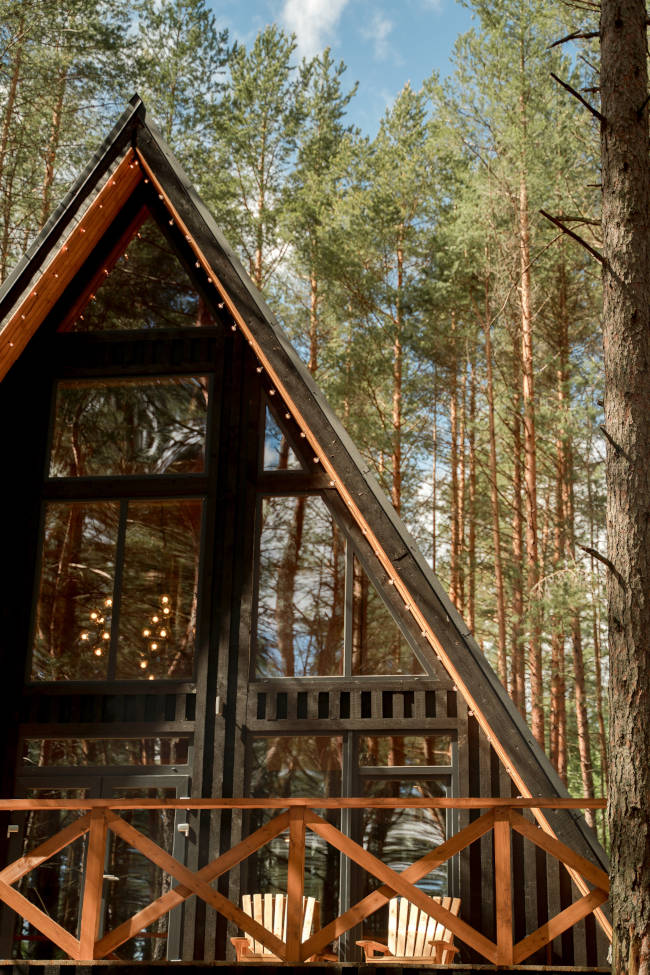
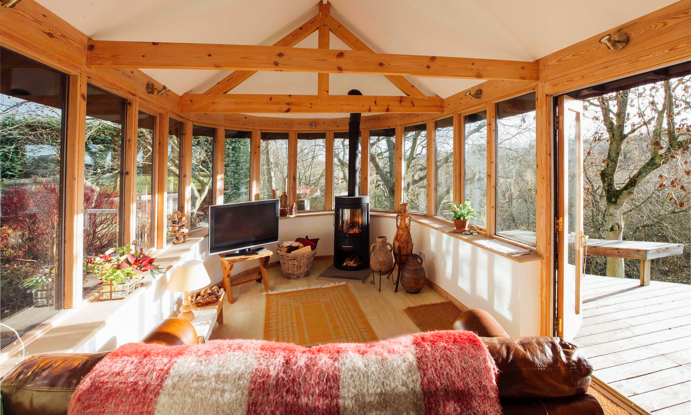
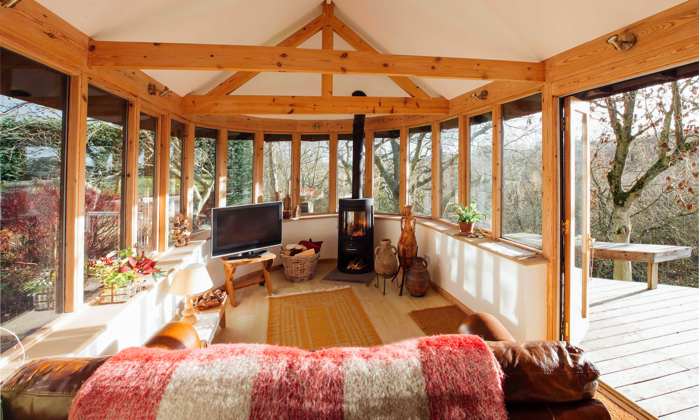

Origens e Histórias dos Chalés: O Estilo Suíço
Estilo arquitetônico suíço
O estilo suíço de chalés é chamado Schweizerstil em alemão ou Sveitserstil em norueguês. Trata-se de um estilo arquitetônico da história recente, que busca sim inspiração em casas de campo da Suíça, localizadas em regiões alpinas (ou montanhosas) e também encontradas na Europa central.
O estilo suíço dos chalés geralmente apresenta projeto tradicional, caracterizado por telhados e fachadas amplos, dotados de decoração rica e varandas de madeira que podem trazer ornamentos esculpidos
Exemplo de chalé edificado na Suíça
 
